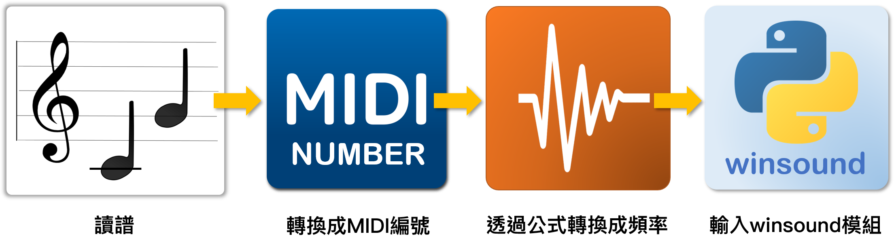
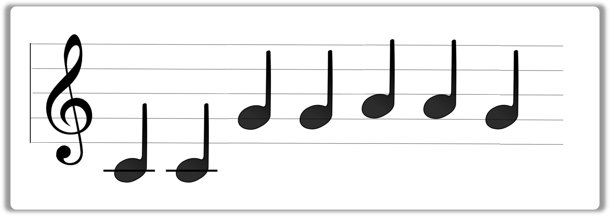
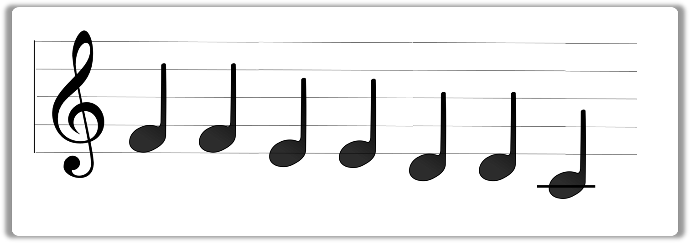
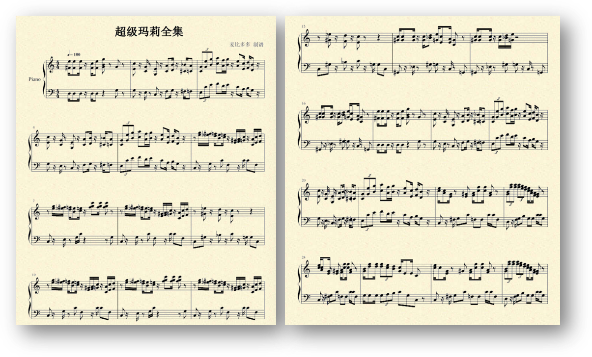

winsound模組 - 來改編吧
現在我們改用Python來創作音樂吧！
這裡可以善用我們學習的Python語法來創造具有節奏性的音樂，也可以自己創造的音樂格式，讓使用者輸入自己的樂譜！
🗒️winsound模組
winsound模組是Python內置的聲音控制模組，使用者可以用它來播放幾乎所有的Windows內建音效。
但如果只是要播出某個頻率的聲音，我們只要使用Beep()這個函式即可。
| 名稱 | 用法 |
|---|---|
| Beep(frequency, duration) | frequency參數設定頻率，duration參數設定播放的時間(單位為千分之一秒) |
👨💻課堂練習-1
創建python檔
打開sublime3， Ctrl + N 開啟一個新檔案， 緊接著Ctrl + S存檔， 將檔案命名為
music1.py， 並且將儲存目的地選在"桌面"。(方便待會兒操作)匯入所需模組
和所有模組一樣，首先使用import將winsound模組匯入：
import winsound播放聲音
使用winsound模組裡面的Beep()函式，設定頻率為440hz，為期一秒鐘的聲音。
winsound.Beep(440,1000)執行之後就可以聽到聲音了！
👀動手做做看

在前一個章節，我們提過一個公式可以將MIDI編號( p )轉換成頻率( f )。
f = 440*2**((p-69)/12)
完整程式：
import winsound
p = 69
f = 440*2**((p-69)/12)
winsound.Beep(f,500)
👀讀譜翻譯
如果我們現在有一段樂譜，為了讓電腦能讀懂並幫助我們播放，我們應該要依照此步驟將其數位化：


現在有一個樂譜：

我們可以將它先對照鋼琴鍵，轉換成MIDI編號，並且用一個串列存起來。
soundList = [60, 60, 67, 67, 69, 69, 67]
再使用一個for迴圈，從串列中提取，並依序播出：
for p in soundList:
f = 440*2**((p-69)/12)
winsound.Beep(f,500)
👀動手做做看
請大家試著完成這個樂譜的後半段吧！說說看你聽到什麼音樂？

🗒️超級瑪利歐兄弟
我們的目標是創作出耳熟能詳的【1985超級瑪利歐兄弟】主題曲，跟剛剛不同的是，音符的變化更多了，也加入了不少休止符！

第二個挑戰是超級瑪莉通關時的音樂 http://www.mariopiano.com/mario-sheet-music-flagpole-fanfare.html
Beep()函式雖然好用，但是無法播放休止符，所以我們需要另外的time模組協助。
time模組是Python內置的時間控制模組，使用者可以用它來取得現在電腦的時間或日期，也可以用它來讓程式暫停。
我們用sleep()函式暫停程式，來模仿休止符吧！
| 名稱 | 用法 |
|---|---|
| sleep( duration ) | duration參數設定程式中斷的時間(單位為秒) |